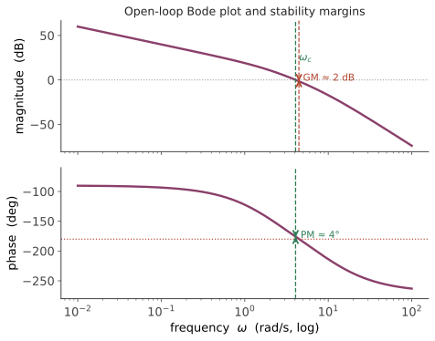

经典 V · 频域分析与裕度
层次：本科核心 ｜ 这是工业界最常用的分析语言。 频域方法之所以在工程上占主导，有一个极实际的理由：它可以直接从实测数据出发——给系统扫频，测出幅值与相位，就能设计控制器，不需要解析模型。本页讲 Bode 图、Nyquist 判据、稳定裕度，并揭示控制论最深刻的一条限制：水床效应。
一、频率响应
对 LTI 系统输入正弦 \(\sin(\omega t)\)，稳态输出仍是同频正弦，只是幅值被放大 \(|G(j\omega)|\) 倍、相位滞后 \(\angle G(j\omega)\)。把这两个量对频率作图，就是 Bode 图（幅值用 dB、频率用对数）。
为什么用对数：串联系统的传递函数相乘，取对数后变成相加——于是复杂系统的 Bode 图可以由各环节叠加得到，手工作图成为可能。这是 Bode 在 1930 年代的关键设计。
基本环节的渐近线（务必熟悉）：
| 环节 | 幅值斜率 | 相位 |
|---|---|---|
| 积分 \(1/s\) | −20 dB/dec | −90° |
| 一阶惯性 \(\frac{1}{\tau s+1}\) | 转折后 −20 dB/dec | 0° → −90° |
| 二阶欠阻尼 | 转折后 −40 dB/dec，谐振峰 | 0° → −180° |
| 时滞 \(e^{-\tau s}\) | 0 dB（不变） | \(-\omega\tau\)，无限增长 |
注意最后一行：时滞不衰减幅值，却无限累积相位——这就是第一页说它是"反馈头号敌人"的定量表述。
二、Nyquist 判据
把 \(G(j\omega)\) 在复平面上画成一条曲线（\(\omega\) 从 \(-\infty\) 到 \(+\infty\)），Nyquist 判据给出闭环稳定的条件：
\(Z\) 是闭环右半平面极点数（要求为 0），\(P\) 是开环右半平面极点数，\(N\) 是曲线顺时针包围 \(-1\) 点的次数。
对开环稳定的系统（\(P=0\)），条件简化为：Nyquist 曲线不包围 \(-1\) 点。
为什么是 \(-1\)：闭环特征方程是 \(1+L(s)=0\)，即 \(L(s) = -1\)。\(-1\) 点就是"回路增益为 1 且相位为 180°"的那个临界状态——正是第一页说的"负反馈变成正反馈且增益足够"的条件。几何直观与物理直觉在此完全吻合。
三、稳定裕度：离灾难有多远
"不包围 \(-1\)"是二元的，工程需要定量的余量：
- 增益裕度 GM：相位为 −180° 时，增益还能放大多少倍才到 1。典型要求 > 6 dB（2 倍）；
- 相位裕度 PM：增益为 1（0 dB）时，相位离 −180° 还差多少。典型要求 45°–60°。

极其有用的经验关系：
这条经验把频域设计与时域指标连了起来：客户要"超调小于 10%"，你就知道要设计 PM ≈ 60°；客户要"调节时间 0.5 秒"，你就知道穿越频率大致该放在哪里。这是经典控制最实用的一条转换。
为什么不能只看裕度：GM 与 PM 都只看曲线上的一个点。曲线可能在别处很靠近 \(-1\)（虽然两个裕度都合格）。更严格的指标是向量裕度（曲线到 \(-1\) 的最短距离），它等价于 \(1/\|S\|_\infty\)——这就通向了第十六页的 \(H_\infty\) 理论。
四、回路整形：频域设计的思路
回路整形（loop shaping）是频域设计的核心思想：按频段给回路增益 \(|L(j\omega)|\) 规定形状。
这是一个清晰、可操作的设计配方：低频抬高（加积分/滞后）、高频压低（加滤波）、穿越区调整斜率与相位（加超前）。工业上大量控制器就是这样设计出来的。
五、水床效应：一条不可逾越的定理
现在讲控制论最深刻、也最少被外行知道的结果。
Bode 灵敏度积分定理：对开环稳定、相对阶 ≥ 2 的系统，
含义：\(\ln|S|\) 曲线下的正负面积必须相等。你在某个频段把 \(|S|\) 压到 1 以下（抑制干扰），就必然在另一个频段把它抬到 1 以上（放大干扰）。
这就是"水床效应"——按下这头，那头必然翘起来。
它不是设计水平的问题，是数学定理。 工程含义极其实在：
- 你不可能设计出在所有频段都抑制干扰的控制器；
- 只能选择把干扰放大放到你不在乎的频段（通常是高频，或没有干扰能量的频段）；
- 若系统有右半平面极点或零点，情况更糟：积分等式右边变成正数，意味着"必须付出的代价"更大——这是第二页说的"非最小相位系统性能有天花板"的严格版本。
这个定理与其他学科的"不可能性结果"同属一类：🔗 微电子站的 60 mV/dec 玻尔兹曼极限、信息论的香农极限、热力学第二定律。成熟的工程学科都有这样一条告诉你"什么做不到"的定律，而知道边界在哪，正是专业性的体现。
六、从实测数据出发
最后强调频域方法在工业上的决定性优势：
- 扫频实验（或用伪随机信号、阶跃辨识）直接得到 \(|G(j\omega)|\) 与 \(\angle G(j\omega)\)，无需知道物理模型；
- 在实测 Bode 图上直接做回路整形；
- 时滞、柔性模态、非线性的一阶效应都自然包含在实测数据里——不必单独建模。
这就是为什么现场工程师更常用频域方法：它容忍"我不知道这台设备的精确模型"这个常态。（🔗 第十八页系统辨识会给出更系统的做法。）
七、要点
- Bode 图的对数坐标使串联变叠加，是手工设计的基础；
- Nyquist 的 \(-1\) 点就是"增益 1、相位 180°"的临界条件；
- PM ≈ 60° ↔ \(\zeta\) ≈ 0.6 ↔ 超调约 10%——频域与时域的实用换算；
- 回路整形给出清晰配方：低频高、高频低、穿越处 −20 dB/dec；
- 水床效应是定理：干扰抑制的总量守恒，你只能选择把代价放在哪个频段；
- 频域方法可直接用实测数据，这是它在工业上占主导的根本原因。
下一页：PID。理论讲完，来看工业界真正在用的东西——它占据了实际控制器的绝大多数，而它的工程细节（抗饱和、微分滤波、整定）恰恰是教科书讲得最少的。